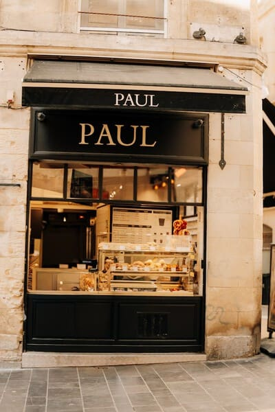

PASTELERIA SAN ANTONIO
Hace 13 años, Pastelería San Antonio nació con el objetivo de recuperar la tradición peruana de preparar los postres en casa, con la clásica “receta de la abuela”. Una linda tradición familiar que no sólo unía a la familia, sino que rescataba las recetas familiares que pasaban de generación en generación.
Una historia que comenzó con las clásicas recetas de Antonio, aquellas que desempolvó después de mucho tiempo para el deleite de todos nosotros. Hoy, Pateleria San Antonio se ha convertido en una empresa que va mucho más allá de postres tradicionales y ricos. Somos una gran familia, conformada en su mayoría por mujeres empoderadas, pero también por hombres que se sumaron a este propósito. Una aventura que busca potenciar a personas trabajadoras, que lo dan todo por alcanzar sus sueños y darle lo mejor a sus hijos.
Juntos, motivados por una misma pasión, nos esforzamos para traerles los postres más ricos y brindarles el mejor servicio posible, con el propósito de endulzar la vida de nuestros clientes, para hacerlos más felices